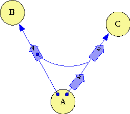

| |
Partially-Ordered |
||||||
Two Party On-a-Reference:
Full Order
Among messages successively sent on a single reference (ie, using the eventual send operator "<-"), E guarantees fully order-preserving delivery. All messages are delivered in the order sent unless and until the reference breaks (because of partition -- a communications failure between vats). Once the reference breaks, no further messages are delivered. Therefore, if a particular message does get delivered, E guarantees that all messages sent earlier on the same reference were already delivered.
As a result, once Alice has sent the message X to Carol, Alice should think of the reference she is now holding as a reference to the Carol that has already seen X. This is true even though Carol has not yet seen X and may never see X. Although Carol hasn't seen X yet, using this reference Alice no longer has any ability to deliver a message to Carol before Carol sees X. Although Carol may never see X, because of a communications failure that Alice doesn't yet know about, if Carol does not see X, then Carol won't see any further messages Alice sends on this reference after X.
(Note: If Alice and Carol are in the same Vat and Alice has a NEAR reference to Carol, Alice can still immediately call Carol, perhaps delivering a message before messages which were eventually sent earlier. The rest of the page will ignore NEAR references and immediate calls.)
Three Party Granovetter:
Tree Order
|
The above ordering guarantee is quite useful for Alice -- it allows the Alice-to-Carol protocol to be naively stateful. Unfortunately, we cannot afford these guarantees once there are three parties in three different vats. For example, if Alice shares with Bob her reference to Carol, it would be unreasonable to require that Carol sees the message according to the global-time order in which they are sent by Alice and Bob. It is also unecessary, as Alice and Bob shouldn't care about how their actions are ordered in global time. However, without an additional mechanism, our guarantees would be too weak. As explained above, after Alice sends X on her reference to Carol, this reference represents, to her, only the ability to talk to the Carol that has already received X. In a naive implementation, if Alice sends that reference to Bob in message Y, and Bob uses that reference to send message W to Carol, the happenstance of variable network delays may result in W arriving before X. The reference as handed to Bob gave Bob a dangerous possibility -- of delivering a message ahead of X -- that was beyond Alice's notion of the reference's meaning. This would be dangerous. Instead, when a reference is included as an argument of an eventually sent message (as Alice's reference to Carol is included in message Y), we say the reference is forked. Bob does not get the reference Alice sent, but a fork of this reference. When a fork occurs between two sending events, we diagram the fork-position on the reference between these two messages. In the diagram on the right, Alice sends, in sequence, X, Y, and Z. By following these diagramming rules, we easily visualize the partial ordering guarantees E provides. The tree of messages connected by a reference topology is the partial order itself. As of any visualized state, the messages that may be delivered to Carol are those that have no messages ahead of them in the reference topology. In diagrams #1 and #2, this is only message X. The transition to diagram #3 shows message X being delivered to Carol. Following this, we see in diagram #3 that both messages W and Z are candidates to be delivered next. Either choice is consistent with the specification. |
 |
With these rules, the message Bob receives from Alice is as safe in Bob's hand as it is in Alice's. The assumptions Alice needs to make for herself, for the sake of her own sanity, are assumptions that remain valid as she delegates to Bob.
Note that topology is in the specification only, not in the implementation. The implementation is free to deliver messages to Carol in any full order consistent with the specified partial order. It can therefore collapse partial orders to full orders whenever convenient, consistent with these constraints. As Bill Frantz observed, this is one of those rare cases where the specification is much more "expensive" than the implementation.
Although the motivation for these rules is correctness in the face of error, we do tighten the specification to deal with security in the face of malice as well. Even if Bob is hosted in a tampered vat, VatB, that doesn't "play by the rules", the protocol must constrain VatB to be unable to deliver a message to Carol ahead of X. The simplified protocol explained in the Ode violates this property. VatA must not communicate to VatB the authority to access Carol herself. VatA must communicate only an authority to communicate to a post-X Carol.
Four Party Grant Matching:
Partial Order
For this case, proceed to Four Party Partial Order.
Unless stated otherwise, all text on this page which is either unattributed or by Mark S. Miller is hereby placed in the public domain.
| |
|
report bug (including invalid html)
|
||||||||